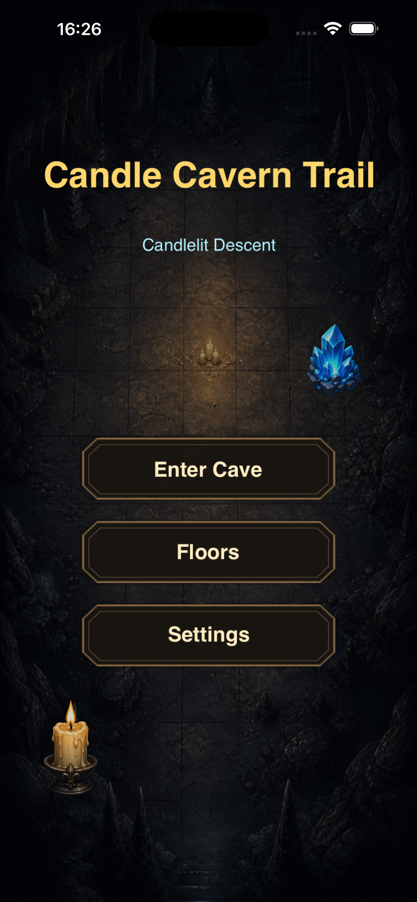
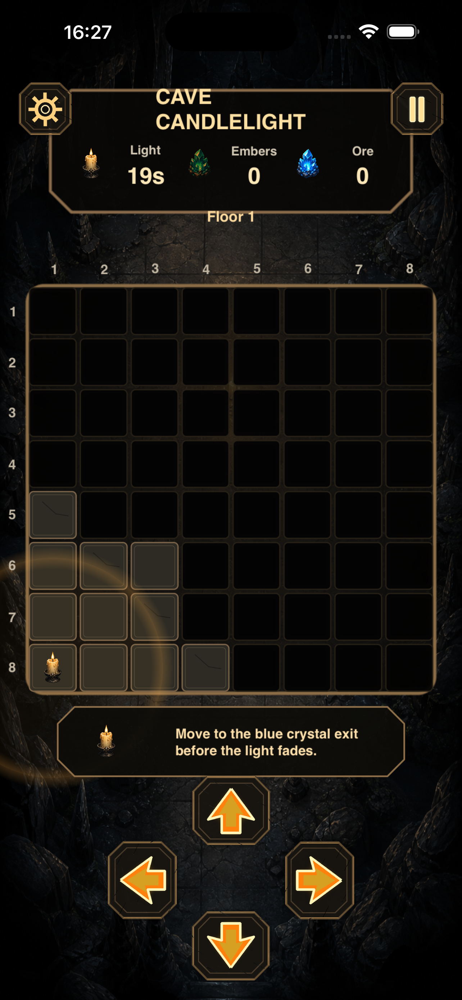
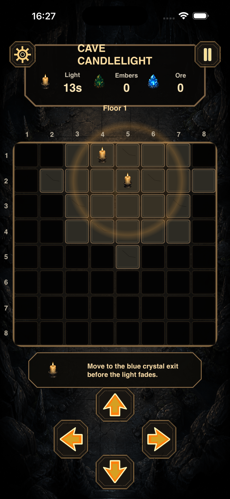
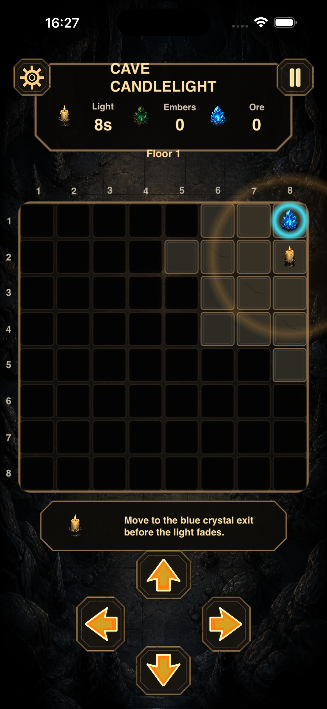
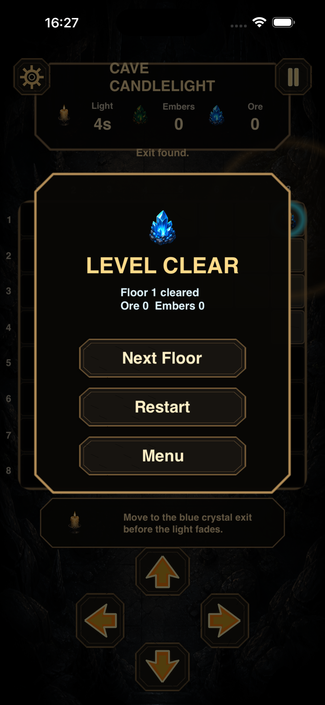

Main menu
Enter the candlelit cave, open the floor list, or adjust settings from the first screen.
Guide a candle through 50 dark cave floors, collect embers for extra seconds, and reach the blue crystal exit before the light fades.
Candle Cavern Trail is a single-player grid puzzle with a 20-second candle timer, 3-cell visibility radius, wall rocks, ore pickups, ember extensions, and local floor unlocking.

Enter the candlelit cave, open the floor list, or adjust settings from the first screen.

Begin each floor with 20 seconds of light and a small visible route through the cave grid.

Move through the dark one cell at a time while the candle reveals only nearby spaces.

Find the blue crystal exit before the countdown reaches zero.

Clear a floor, review the result, then continue deeper into the cave.
Explore a local sequence of 50 candlelit floors, with level buttons unlocking as each floor is cleared.
Early floors begin around 8x8, then expand toward 12x12 with denser wall rocks and longer route turns.
Each run starts with 20 seconds of light, and every ember you collect adds 5 seconds to keep the flame alive.
The candle reveals only a 3-cell radius, so the cave beyond your glow stays dark until you move closer.
Pick up ore crystals when the route allows, but always prioritize the blue exit before the timer burns out.
Use four large on-screen arrow buttons to move one cell at a time through walls, fog, embers, ore, and the exit.
Candle Cavern Trail turns a cave descent into a compact route puzzle. You start at one corner of the board, steer the candle with four directional controls, and search through limited light for embers, ore, safe passages, and the blue crystal exit.
Every floor is stored locally. Later cave floors add denser wall patterns and longer turns while keeping the game offline, private, and quick to replay.
Use the arrow buttons to move the candle one cell at a time. Reach the blue crystal exit before the 20-second light timer reaches zero.
Each ember pickup adds 5 seconds to the remaining candle light. Ore is collected as an optional route reward.
Contact xiao wangyu at croitorzamkov@gmail.com.